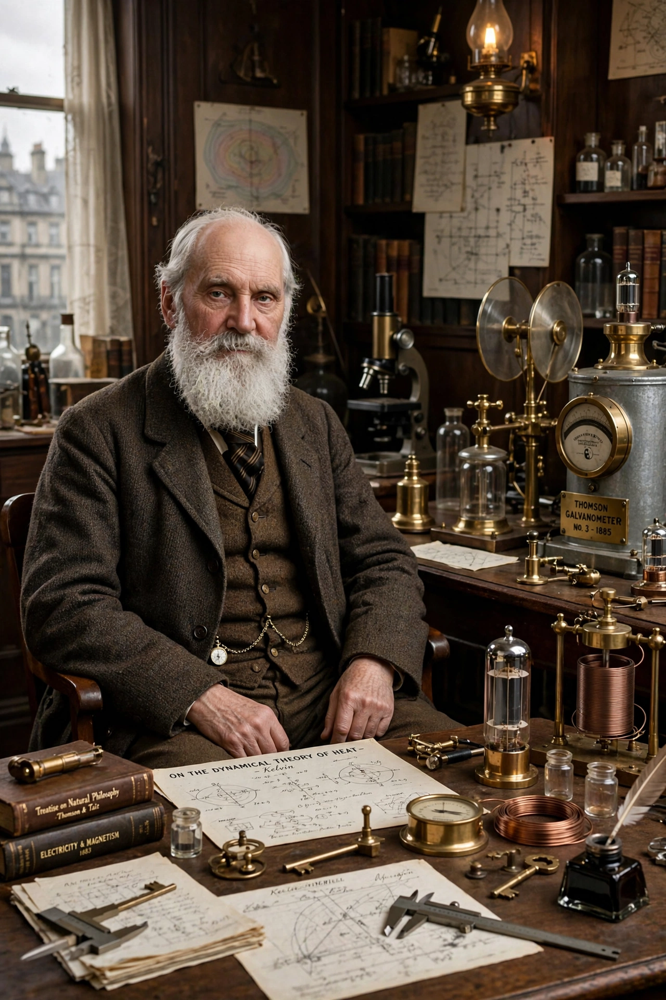

| William Thomson, 1st Baron Kelvin | |
|---|---|
| Born | 26 June 1824, Belfast, Ireland |
| Died | 17 December 1907 (aged 83), Largs, Scotland |
| Fields | Physics, engineering |
| Institutions | University of Glasgow |
| Known for | Absolute temperature scale (kelvin); thermodynamics; transatlantic telegraph cable |
| Awards | Royal Medal, Copley Medal; ennobled 1892 |

William Thomson, 1st Baron Kelvin (26 June 1824 – 17 December 1907), was a British mathematician, mathematical physicist and engineer born in Belfast. Professor of Natural Philosophy at the University of Glasgow for 53 years, he did important work in the mathematical analysis of electricity and the formulation of the first and second laws of thermodynamics, and in establishing physics as a modern discipline.
In 1848 Thomson proposed an absolute temperature scale whose zero is the point at which molecular motion ceases; its unit is now the kelvin, named in his honour (see the 2019 redefinition of the SI base units). He collaborated with James Prescott Joule on the Joule–Thomson effect, worked on the theory of heat conduction, and estimated the age of the Earth from its cooling — an estimate later overturned by radioactivity.
Thomson also had a lucrative career as an engineer and inventor, most famously as electrician for the transatlantic telegraph cable projects of the 1850s–60s, for which he was knighted. He held more than 70 patents, including the mirror galvanometer and siphon recorder. He was elevated to the peerage in 1892 as Baron Kelvin, taking his title from the River Kelvin in Glasgow, and is buried in Westminster Abbey next to Isaac Newton.